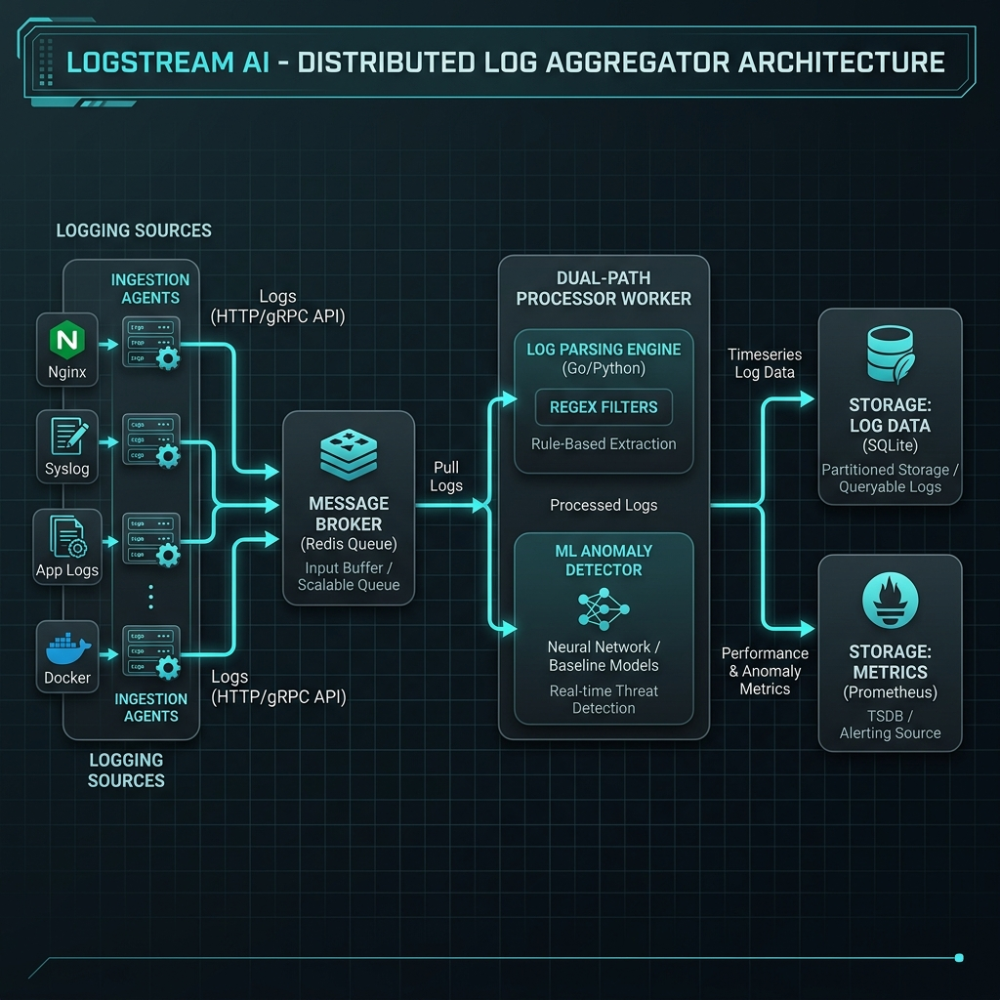
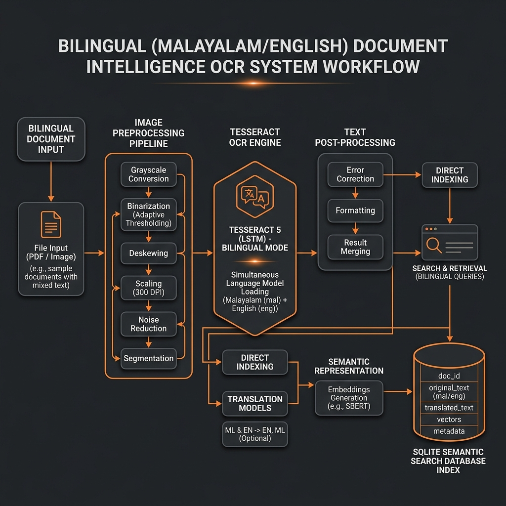
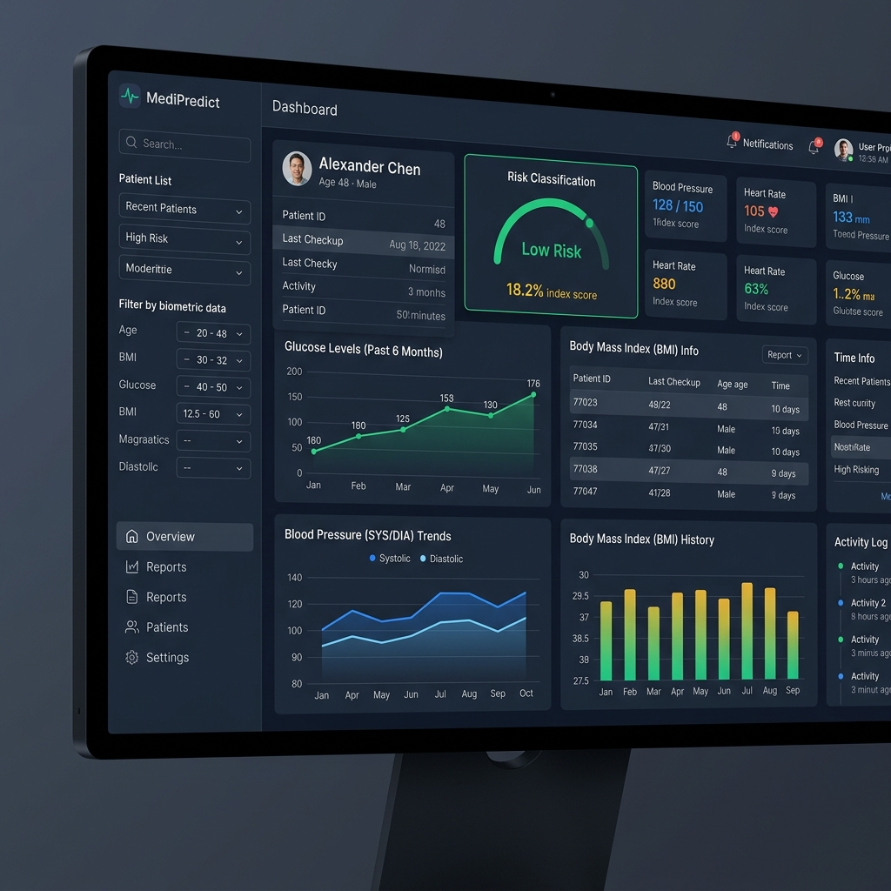

Harsh Palkrutwar
Computer Engineering Student @ I²IT Pune
Practical developer focused on web applications and machine learning pipelines. Experience building bilingual document processors, health risk classifier panels, and relational database systems. Solid understanding of data structures, algorithms, and backend API routing configurations.
// Featured Engineering Milestones
Bilingual OCR System
Architected document cataloging pipeline for Kochi Metro Rail Ltd. processed Malayalam & English transit files.
EV Grid Demand ML
Analyzed grid charging loads, training XGBoost regression models to predict regional charging stress bottlenecks.
Community Pull Requests
Contributed to active open-source repositories, resolving memory leaks, formatting syntax, and updating API routes.
Space Science & Cloud Basics
Completed ISRO IIRS Remote Sensing Certification; active AWS Cloud Club engineer supporting website deployments.
01 // Technical Skills Matrix
02 // Technical Projects Portfolio
LogStream AI — Distributed Telemetry Pipeline
A high-throughput telemetry log aggregator designed for local testing. Ingests mock client logs, buffers payloads in Redis, processes records with Go-based parsing workers, and aggregates partitioned logs in SQLite.
- Concurrent API Ingestion: Built REST endpoints utilizing authorization headers and regular expression validation.
- Queue Buffering: Employs Redis list structures to prevent data drops during simulated network surges.
- Timeseries Storage: Custom partition tables in SQLite optimized for rapid index lookups.


KMRL Document Intelligence
Developed a bilingual document indexing and search application for Kochi Metro Rail Ltd. (KMRL) to parse administrative reports. Preprocesses uploads with thresholding filters before running OCR.
- Processes scans in Malayalam and English languages
- Achieved ~92% character accuracy in prototype testing
- Replaced manual catalogue search sheets with database queries

MediPredict — Healthcare Analytics
Designed a patient telemetry dashboard mapping metrics like glucose levels, BP, and BMI. Classifies chronic diabetes risks and renders charts locally in the browser.
- Runs local diagnostic regression formulas client-side
- Saves server cycles and guarantees user database privacy
- Fully responsive layout deployed at medipredict.me
EV Grid Demand Prediction
Built regression models analyzing charging network history logs to forecast local transformer grid stress peaks. Deployed as a mock training pipeline during an AICTE internship.
- Handles KNN data imputation for missing dataset fields
- Normalizes features to reduce prediction RMSE errors
- Helps grid operators anticipate local load bottlenecks
Hostel Management System
A database-backed room allocation system that uses SQLite transactional locks and foreign key constraints to prevent double-booking conflicts during registration windows.
- Enforces foreign key dependencies and unique constraints
- Implements SQLite transaction isolation blocks
- Includes secure browser cookie session checking
03 // Experience Timeline
AI & Data Analytics Intern
Cleaned and normalized EV station historical load data. Implemented predictive demand algorithms using Pandas, NumPy, and python regressors to forecast grid consumption trends.
Open Source Contributor
Collaborated with multi-developer groups on open source utilities. Resolved linting warnings, optimized algorithms, and merged contributions into centralized GitHub repositories.
Web Development Team
Assisted with website management and local server setup documentation. Explored basic AWS cloud models (EC2 instances, S3 storage volumes, IAM permissions).
Bachelor of Engineering — Computer Engineering
Coursework in Data Structures, Algorithms, Object-Oriented Programming (OOP) architectures, and Relational Database Systems.
04 // Professional Certifications
Activate Interactive Systems Mode
Unfolds the interactive dashboard containing the simulated IDE project tree, mock CLI shell console, and CPU resource telemetry logs for advanced exploration.
05 // Project Workspace Sandbox
KMRL Document Intelligence
Bilingual Summarization and Search Engine
Auditing bilingual transit files manually introduces parsing delays.
Built a bilingual NLP text scanning pipeline mapping documents to translation arrays.
Optimized character segmentation steps to improve OCR accuracy on non-standard layouts.
Acquired practical data cleaning and scaling insights.